About Me
About Me
I received my Ph.D. degree from the ECE Department, UofT 2020 July, thankfully, having Prof. Baochun Li as my advisor. I finished both my Bachelor's and Master's degrees at Shanghai Jiao Tong University in 2012 and 2015, respectively.
Now I am working as an Assistant Professor in the CSE Division of Louisiana State University. We have available Ph.D. positions.
>>> Join us at  IntelliSys Lab !
Research Interest
- Data Analytics, Machine Learning, Distributed Computing, Data Center Networking
Publications
Conference Papers
- Themis: A Fair Evaluation Platform for Computer Vision Competitions
Zinuo Cai, Jianyong Yuan, Yang Hua, Tao Song, Hao Wang, Zhengui Xue,
Ningxin Hu, Jonathan Ding, Ruhui Ma, Mohammad Reza Haghighat, Haibing Guan. IJCAI 2021.
- Optimizing Federated Learning on Non-IID Data with Reinforcement Learning [PDF] [Slides]
Hao Wang, Zakhary Kaplan, Di Niu, Baochun Li. IEEE INFOCOM 2020.
- Distributed Machine Learning with a Serverless Architecture [PDF] [Slides]
Hao Wang, Di Niu, Baochun Li. IEEE INFOCOM 2019.
- Dynamic and Decentralized Global Analytics via Machine Learning [PDF] [Slides]
Hao Wang, Di Niu, Baochun Li. ACM SoCC 2018.
- Lube: Mitigating Bottlenecks in Wide Area Data Analytics [PDF] [Slides]
Hao Wang, Baochun Li. Usenix HotCloud 2017.
- FlowProphet: Generic and Accurate Traffic Prediction for Data-parallel Cluster Computing [PDF] [Slides]
Hao Wang, Li Chen, Kai Chen, Ziyang Li, Yiming Zhang, Haibing Guan, Zhengwei Qi, Dongsheng Li, Yanhui Geng. IEEE ICDCS 2015.
- Guaranteeing Deadlines for Inter-Datacenter Transfers
Hong Zhang, Kai Chen, Wei Bai, Dongsu Han, Chen Tian, Hao Wang, Haibing Guan, Ming Zhang. ACM EuroSys 2015.
- Practical Information-Agnostic Flow Scheduling for Data Center Networks
Wei Bai, Li Chen, Kai Chen, Dongsu Han, Chen Tian, Hao Wang. USENIX NSDI 2015.
- Explicit Path Control in Commodity Data Centers: Design and Applications
Shuihai Hu, Kai Chen, Haitao Wu, Wei Bai, Chang Lan, Hao Wang, Hongze Zhao, Chuanxiong Guo. USENIX NSDI 2015.
- On Pricing Schemes in Data Center Network with Game Theoretic Approach [PDF] [Slides]
Hao Wang, Yangming Zhao, and Haibing Guan. IEEE ICCCN 2014.
Journal Papers
- SpaceDML: Enabling Distributed Machine Learning in Space Information Networks
Hanxi Guo, Qing Yang, Hao Wang, Yang Hua, Tao Song, Ruhui Ma, Haibing Guan. IEEE Network 2021.
- Turbo: Dynamic and Decentralized Global Analytics via Machine Learning
Hao Wang, Di Niu, Baochun Li. IEEE TPDS 2020.
- Mitigating Bottlenecks in Wide Area Data Analytics via Machine Learning
Hao Wang, Baochun Li. IEEE TNSE 2018.
- Information-Agnostic Flow Scheduling for Commodity Data Centers
Wei Bai, Li Chen, Kai Chen, Dongsu Han, Chen Tian, Hao Wang. IEEE/ACM ToN 2017.
- Guaranteeing Deadlines for Inter-Datacenter Transfers
Hong Zhang, Kai Chen, Wei Bai, Dongsu Han, Chen Tian, Hao Wang, Haibing Guan, Ming Zhang. IEEE/ACM ToN 2016.
- Explicit Path Control in Commodity Data Centers: Design and Applications
Shuihai Hu, Kai Chen, Haitao Wu, Wei Bai, Chang Lan, Hao Wang, Hongze Zhao, Chuanxiong Guo. IEEE/ACM ToN 2015.
- Towards Comprehensive Traffic Forecasting in Cloud Computing: Design and Application
Yang Peng, Kai Chen, Guohui Wang, Wei Bai, Yangming Zhao, Hao Wang, Yanhui Geng, Zhiqiang Ma, Lin Gu. IEEE/ACM ToN 2015.
Projects
- HDFS
putx command, which specifies the data storage location in HDFS. [GitHub]
- FLSim, a simulation framework for federated learning based on PyTorch. [GitHub]
Teaching
Mentoring
- ESC 499: Engineering Science Thesis, Zhongyang Xiao and Luyuan Chen, 2016.10-2017.04
- ESC 499: Engineering Science Thesis, Haobo Ding and Yudian Shi, 2018.10-2019.04
- Undergraduate Summer Intern, Zakhary Kaplan, 2019.04-2019.08
- ESC 499: Engineering Science Thesis, Maliha Islam, 2019.10-2020.04
- ECE 2500: Master of Engineering Project, Zhixuan Wang, 2020.04-2020.09
Professional Service
- 2022, TPC Member, The 42nd IEEE International Conference on Distributed Computing Systems (ICDCS)
- 2022, TPC Member, The 31st ACM The Web Conference 2022 (TheWebConf)
- 2022, TPC Member, The 41st IEEE International Conference on Computer Communications (INFOCOM)
- 2021, Faculty Mentor, Google Research exploreCSR
- 2021, TPC Member, The 13th EAI International Conference on Ad Hoc Networks (ADHOCNETS)
- 2021, TPC Member, The 22nd IEEE International Conference on Information Reuse and Integration for Data Science (IRI)
- 2021, Shadow PC Member, ACM EuroSys Conference
- 2021, TPC Member, The 40th IEEE International Conference on Computer Communications (INFOCOM)
- 2020, TPC Member, The 21st IEEE International Conference on Information Reuse and Integration for Data Science (IRI)
- 2017, Web Chair, The 25th IEEE International Conference on Network Protocols (ICNP)
Education
Awards
- 2019, Didi Graduate Awards on Cloud Computing, Didi Chuxing Technology Co. (滴滴出行) [Link]
- 2019, Best In-session Presentation Award, INFOCOM'19, IEEE [Link]
- 2019, Doctoral Completion Award, ECE Department, University of Toronto
- 2018, SGS Conference Grant, School of Graduate Studies, University of Toronto
- 2018, Student Scholarships, SoCC'18, ACM
- 2015, University of Toronto Fellowship, ECE Department, University of Toronto
- 2015, Edward S. Rogers Sr. Graduate Scholarships, University of Toronto
- 2013, Yunfeng Prize, The 2nd Aliyun Cloud Computing Developer Competition (Top 1%), Alibaba Cloud Inc.
Links
Leisure Life
- Painting, Photography, Reading, and Badminton